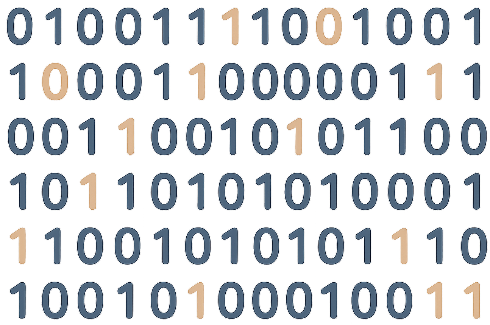
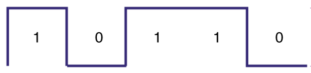
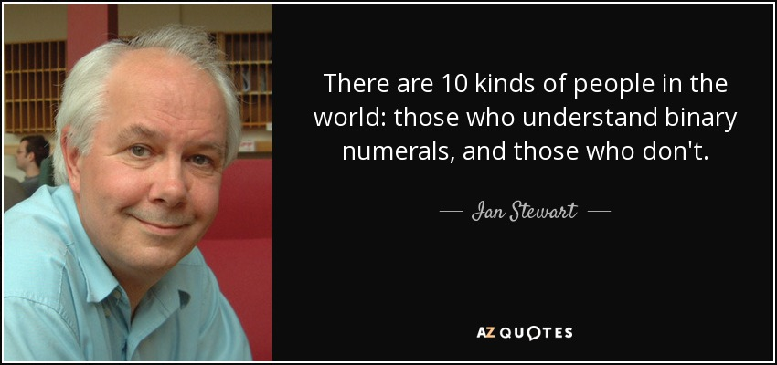
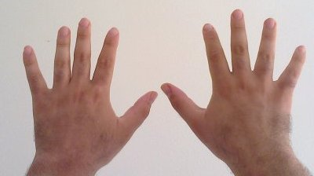
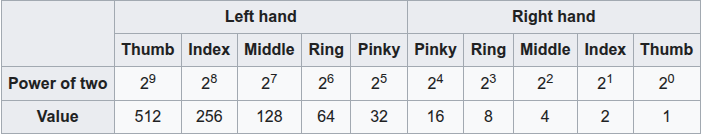
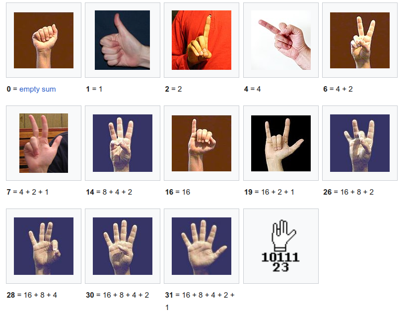

Bits and Bytes#
Introduction to computer programming
Management and Artificial Intelligence
What is a Computing System?#
A computing system:
consists of Software and Hardware working together
allows program computations, i.e., execution of programs
{kind=link}
Common examples are your desktop PCs, laptops, smartphones, smartwatches, data centers, supercomputers, smart TVs, smart fridges, and so on!
Computations manipulate data#
Well, basically:
perform calculations: a billion calculations per second!
remember results: hundreds of gigabytes of storage!
What kind of calculations?
built-in operations included in the programming language
custom, ad hoc, defined by the programmer
The essence of a computation: store, manipulate, and move data.
Data in computing means bits#
The bit is the most basic unit of information in computing. The name is a portmanteau of binary digit. The bit represents a logical state with one of two possible values:
Representation |
First value |
Second value |
|---|---|---|
Binary digit |
1 |
0 |
Boolean |
true |
false |
Electronic |
on |
off |
This is how computers see data (pictures, text, everything!):

How can we interpret bits?
Positional Notation#
The binary representation is based on a positional notation, which you know from decimal numbers!
For example, if we consider the numbers 3, 43, 543, and 6543:
We consider digits based on their position, from the rightmost one to the leftmost one. We then multiply each digit by the base (10 in this case) raised to the power of the position (minus one).
NOTE: The subscript 10 indicates that the number is in base 10.
In other words, we assign a different weight to each digit based on its position:
Digit |
6 |
5 |
4 |
3 |
|---|---|---|---|---|
Position |
3 |
2 |
1 |
0 |
Weight |
\(10^3\) |
\(10^2\) |
\(10^1\) |
\(10^0\) |
More generally, we can write for the decimal positional system:
where:
\(10\) is the base used for the powers
\(d_i\) is the digit at position \(i\) (from right to left)
\(n\) is the number of digits
\(d_i \in \{0, 1, \ldots, 9\}\)
We can generalize our positional system to any base \(b\): $\( \sum_{i=0}^{n-1} d_i \times b^i = \text{value}_{10} \)$
where:
\(b\) is the base of the powers
\(d_i\) is the digit at position \(i\) (from right to left)
\(n\) is the number of digits
\(d_i \in \{0, 1, \ldots, b-1\}\)
for convenience, the result (\(\text{value}_{10}\)) is kept in base 10
The base \(b\) can be any positive integer, but it is common to use powers of 2, 8, 10, and 16.
Computers work with binary data, so \(b=2\).
Why do computers prefer the binary representation?#
Computers are devices that work with electric signals with two state levels:

Why does the signal have only two levels?
It makes it more resistant to noise and interference since it uses extreme, easy-to-identify cases:
0: switch off, low signal, no current, or minimum voltage
1: switch on, high signal, maximum current, or maximum voltage
Electrical devices can use more levels, but that makes the signal harder to interpret. For instance:
A light bulb with two states (on or off) makes it easier to identify the state.
A light bulb with multiple brightness levels needs precise detection: 10% vs 20% brightness? More complex and costly.
Humans and Computers are quite different#
What is intuitive for humans is not necessarily intuitive for computers:
In the context of computer systems, intuitive means easy to implement.
In the context of humans, intuitive often means easy to understand.
In practice:
The decimal system is intuitive for humans, but not for computers.
The binary system is intuitive for computers, but not for humans.
Binary representation#
where:
\(b=2\) is the base of the powers
\(d_i\) is the digit at position \(i\) (from right to left)
\(n\) is the number of digits
\(d_i \in \{0, 1\}\)
for convenience, the result (\(\text{value}_{10}\)) is kept in base 10
The powers of \(2\) are:
Position: |
8 |
7 |
6 |
5 |
4 |
3 |
2 |
1 |
0 |
|---|---|---|---|---|---|---|---|---|---|
Power of two: |
\(2^8\) |
\(2^7\) |
\(2^6\) |
\(2^5\) |
\(2^4\) |
\(2^3\) |
\(2^2\) |
\(2^1\) |
\(2^0\) |
Value: |
256 |
128 |
64 |
32 |
16 |
8 |
4 |
2 |
1 |
Conversion from binary to decimal#
We already know how to do that based on what we said before :)
For instance:
the binary number \(1010\):
the binary number \(1001\):
the binary number \(11010\):
the binary number \(10001\):
First \(n\) binary numbers (\(n=16\))#
Interesting properties of binary numbers#
Even numbers end with 0, odd numbers end with 1:
Binary numbers composed only of \(n\) digits equal to \(1\) are equal to \(2^n-1\):
Binary numbers composed only of \(n\) digits equal to \(0\) are equal to \(0\). This is trivial!
Conversion from decimal to binary#
Keep dividing the number by 2 until the quotient is 0, then take the remainders in reverse order.
For instance, when converting \(102_{10}\) to binary:
The result is \(1100110_2\).
When converting \(1056_{10}\) to binary:
The result is \(10000100000_2\)
Why do computers use hexadecimal numbers?#
Internally, computers use binary numbers. However, when data must be represented in a human-readable format, there are two common choices:
decimal:
pro:
most intuitive and easy for humans
more compact (less digits to represent the same number) than binary
cons:
not compact (more digits to represent the same number) than larger bases
hard to convert from binary: we hate divisions!
hexadecimal:
pro:
compact (less digits to represent the same number) than binary and decimal
easy to convert from binary: we love powers of 2!
cons:
not intuitive as decimal but not too bad
When data must be shown in raw format, computers show data in hexadecimal.
Hexadecimal numbers#
where:
\(b=16\) is the base of the powers
\(d_i\) is the digit at position \(i\) (from right to left)
\(n\) is the number of digits
\(d_i \in \{0, 1, \ldots, 9, A, B, C, D, E, F\}\)
\(d_i > 9\) are represented with a single digit: \(A=10\), \(B=11\), \(C=12\), \(D=13\), \(E=14\), \(F=15\)
for convenience, the result (\(\text{value}_{10}\)) is kept in base 10
The powers of \(16\) are:
Position: |
5 |
4 |
3 |
2 |
1 |
0 |
|---|---|---|---|---|---|---|
Power of 16: |
\(16^5\) |
\(16^4\) |
\(16^3\) |
\(16^2\) |
\(16^1\) |
\(16^0\) |
Value: |
\(1048576\) |
\(65536\) |
\(4096\) |
\(256\) |
\(16\) |
\(1\) |
For instance, the number \(1A3FA _{16}\) is:
\begin{equation*} 1A3FA_{16} = \underbrace{1 \times 16^4}\text{fifth position} + \underbrace{A \times 16^3}\text{fourth position} + \underbrace{3 \times 16^2}\text{third position} + \underbrace{F \times 16^1}\text{second position} + \underbrace{A \times 16^0}\text{first position} = 107514{10} \end{equation*}
\(1A3FA_{16}\) is a 5-digit number in base 16.
\(1A3FA_{16}\) is a 6-digit number in base 10: \(107514_{10}\)
\(1A3FA_{16}\) is a 6-digit number in base 2: \(11010001111111010_{2}\)
The difference in number of digits increases as the number increases.
Conversion from binary to hexadecimal#
We can convert a binary number to a hexadecimal number by:
grouping the binary digits into sets of four, starting from the right.
Each group of four binary digits can be converted to a single hexadecimal digit.
For instance, \(11010001111111010_{2}\):
Conversion from hexadecimal to binary#
Opposite strategy:
Convert each hexadecimal digit to its binary equivalent.
Combine the binary digits to form the final binary number.
For instance, \(1A3FA_{16}\):
Turning text into bits#
One way to represent text as bits is to use the ASCII (American Standard Code for Information Interchange) encoding:
{kind=link}
Split the text into characters
Take each character of your text and consider the hex value of that character from the ASCII table
Convert the hex values to binary
Concatenate the binary values
For instance, the text “Hello LUISS”:
Characters:
H,e,l,l,o,L,U,I,S,SHex values: \(48_{16}\), \(65_{16}\), \(6C_{16}\), \(6C_{16}\), \(6F_{16}\), \(20_{16}\), \(4C_{16}\), \(55_{16}\), \(49_{16}\), \(53_{16}\), \(53_{16}\)
Binary values: \(01001000_{2}\), \(01100101_{2}\), \(01101100_{2}\), \(01101100_{2}\), \(01101111_{2}\), \(00100000_{2}\), \(01001100_{2}\), \(01010101_{2}\), \(01001001_{2}\), \(01001111_{2}\), \(01001111_{2}\)
Concatenated binary values: \(0100100001100101011011000110110001101111001000000100110001010101010010010100111101001111_{2}\)
Turning bits to text#
Split the binary bits into groups of 8
Convert the binary values to hex
Convert the hex values to characters using the ASCII table
Combine the characters to obtain the text
For instance, in the previous example:
Grouped binary values: \(01001000_{2}\,\,01100101_{2}\,\,01101100_{2}\,\,01101100_{2}\,\,01101111_{2}\,\,00100000_{2}\,\,01001100_{2}\,\,01010101_{2}\,\,01001001_{2}\,\,01001111_{2}\,\,01001111_{2}\)
Hex values: \(48_{16}\), \(65_{16}\), \(6C_{16}\), \(6C_{16}\), \(6F_{16}\), \(20_{16}\), \(4C_{16}\), \(55_{16}\), \(49_{16}\), \(53_{16}\), \(53_{16}\)
Characters:
H,e,l,l,o,L,U,I,S,SText:
Hello LUISS
Tool for the text-to-binary conversion#
{kind=link}
Text is for humans, binary is for machines#
Computers are fine with binary and do not need to convert between binary and text.
Computers do convert between binary and text, to help us humans!
Text is shown on the screen for our benefit, but remember that it is stored in binary!
Other data formats#
Depending on the specific data type, there is a standardized way of turning a sequence of bits into a human-readable format.
For instance, a simple yet inefficient image format:
split bits into groups of 8
each group is a number between 0 and 255
each number is seen as a different pixel
each pixel value is displayed on the screen with a different color
there are only 256 colors available
This is a very inefficient way of representing an image, but it is simple to understand. Image formats, such as JPEG or PNG, are much more efficient and effective:
they can use more than 256 colors… millions of colors!
they can use compression to reduce the size of the file: if some adjacent pixels have the same color, they can be represented in a more compact way!
PPM Image format#
This is an example of a color RGB image stored in PPM format:
P3
# "P3" means this is a RGB color image in ASCII
# "3 2" is the width and height of the image in pixels
# "255" is the maximum value for each color
# This, up through the "255" line below, is the header.
# Everything after that is the image data: RGB triplets.
# In order: red, green, blue, yellow, white, and black.
3 2
255
255 0 0
0 255 0
0 0 255
255 255 0
255 255 255
0 0 0
{kind=link}
Byte#
A byte is a unit of information made up of 8 bits. Most systems and data formats are designed to process data in bytes, the most common unit when dealing with sequences of bits. Indeed, in computer science, bytes are often used to measure the amount of data stored or transmitted.
Notice that:
8 bits can represent 256 different values (from 0 to 255)
8 bits can be written as 2 hex digits
For instance, \({1110110011}_2\):
For values larger than 255, we still group by 8 bits, ending with more than one byte. When the number of bits is not a multiple of 8, we add leading zeros to make it a multiple of 8.
For instance:
Multiple-byte units#
|
|
||||||||||||||||||||||||||||||||||||||||||||||||||||||||||||||||||||||||||||||||||||||||||||||||
Understanding The Growing World Of Bytes#
An interesting infographic that shows the evolution (and scale) of the world’s data over time:
{kind=link}
Fun time#
Dad’s joke time#

If you do not get the joke: 10 in binary is 2 :)
Wait a minute…#

Check out your hands... What do you see?
I see ten bits! Each finger is either up (1) or down (0).
Finger Binary#
https://en.wikipedia.org/wiki/Finger_binary

Using two hands we can count up to 1023, that is 210 – 1!

Exercise Session#
Find exercises here.